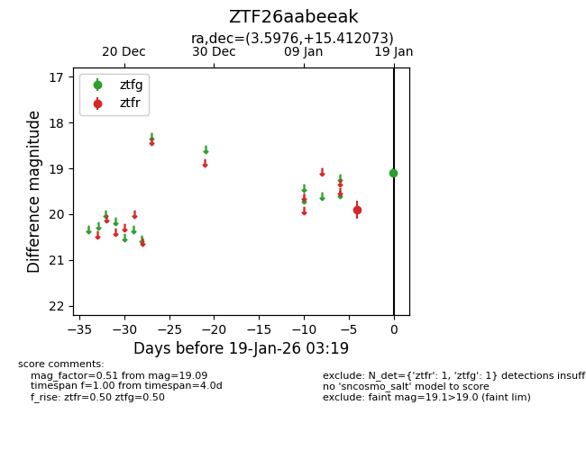
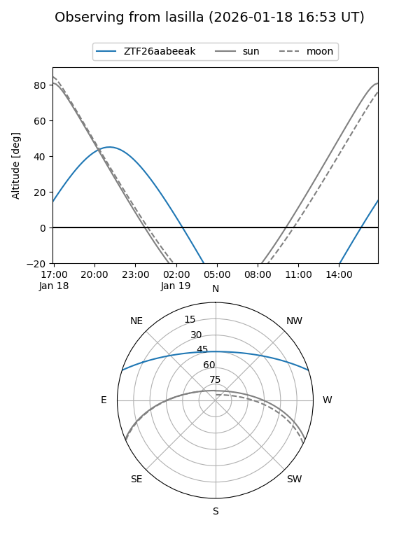
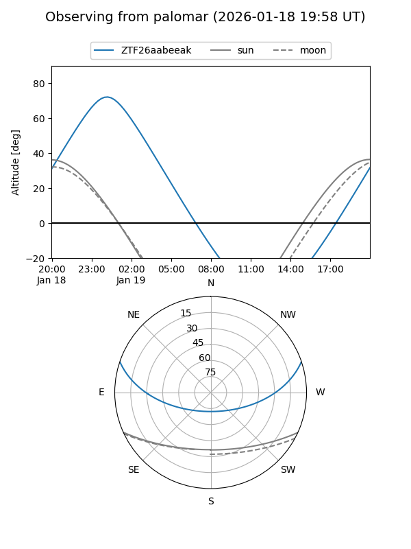

ZTF26aabeeak
Target ZTF26aabeeak at 2026-01-19 03:30
Aliases and brokers:
FINK: link
Lasair: link
ALeRCE: link
alt names
ZTF26aabeeak (ztf,fink_ztf)
Coordinates:
equatorial (ra, dec) = 3.5976,+15.41207
equatorial (HMS+DMS) = 00:14:23.42,+15:24:43.46
galactic (l, b) = (109.9002,-46.52012)
Flags:
Photometry:
last ztfg=19.09, ztfr=19.20
1 ztfg, 2 ztfr detections
Lightcurve

Visibility


Additional plots